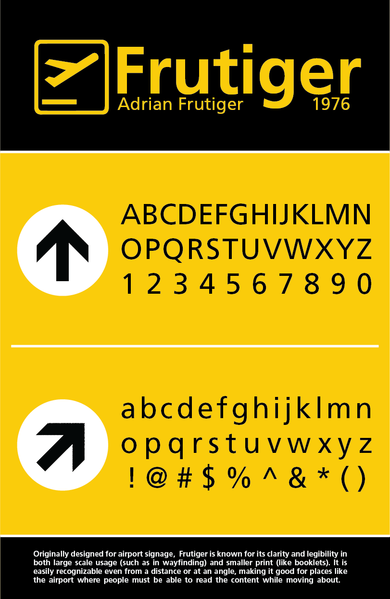

frutiger study
I designed this poster for an assignment in a typography class I took. We researched a font, wrote a short paper on it, and designed a poster to represent it. In my research, I discovered Frutiger was initially designed for airport signage, so I chose that as a theme to work around. The yellow/black/white color signs stood out to me as iconic, so I went with this color scheme. Frutiger is a highly legible font, in both large and small text. The paper I wrote is below.
The Charles de Gaulle Airport (then Airport Roissy) commissioned Adrian Frutiger to develop a sign and directional system in 1968. Originally named Roissy, the font was based on one of his previous fonts, Concorde (another, less successful, sans serif font). Roissy was completed in 1972, and the Frutiger family was released in 1976. Frutiger was designed as a print version of Roissy, including improved spacing. Frutiger made sure it was legible in conditions like poor lighting and when the reader moves quickly, so the font was bolder than others. The sans-serif typeface combines the cleanliness of Univers (an earlier successful font by Frutiger) with the organic components of Gill Sans (a well-known humanist font). Letters like a, e, and s have wide/open apertures, and its x-height is very high to increase its clarity in headings. As it was designed before the age of computers, Frutiger had to hand draw each weight. The Frutiger family was redesigned for the Platinum Series with more harmonized weights and a truer italic (the original italic was more oblique), now Frutiger Next. Frutiger’s simplicity and legibility makes it popular in advertising and small print; it works for both large scale, as in the airport, and a smaller scale for magazines/booklets. It is used on road signs in Switzerland, public transport in Oslo Norway, pharmaceuticals, the Finnish Defence Forces, the British Royal Navy and British Army, the Conservative Party of Canada, and more. Common color combinations seen in airport signage include yellow/black/white and blue/white; street signs are commonly in green/white and blue/white. Works Cited Linotype. “Frutiger® - Webfont & Desktop Font « MyFonts.” Univers® - Webfont & Desktop Font « MyFonts, www.myfonts.com/fonts/linotype/frutiger/.
Adobe Illustrator; February 2019